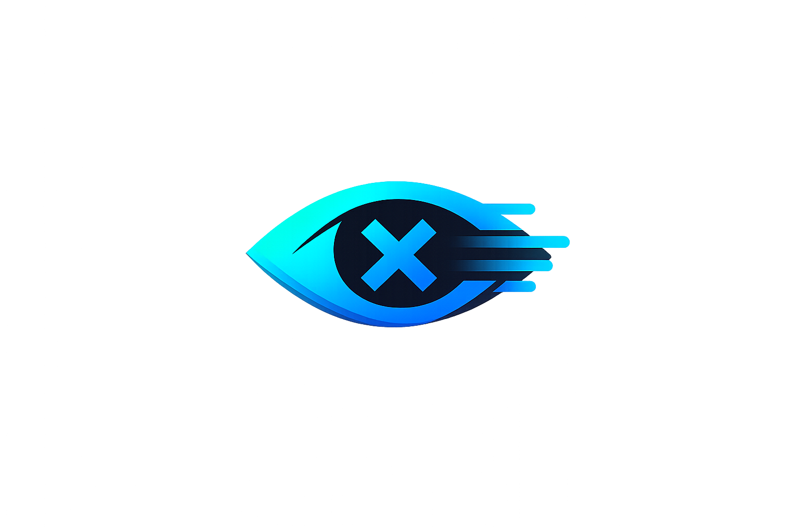

ZeroNoise
0 filtered today
Your feed is cleaner.
Active Categories
Top Hidden Categories
How it works: ZeroNoise learns from your actions. Click "Hide more like this" on posts you don't want, and optionally tag them by category (gossip, politics, sports, etc.). The extension learns patterns and filters similar content automatically.
Privacy: Runs 100% locally. No servers, no telemetry, no tracking.